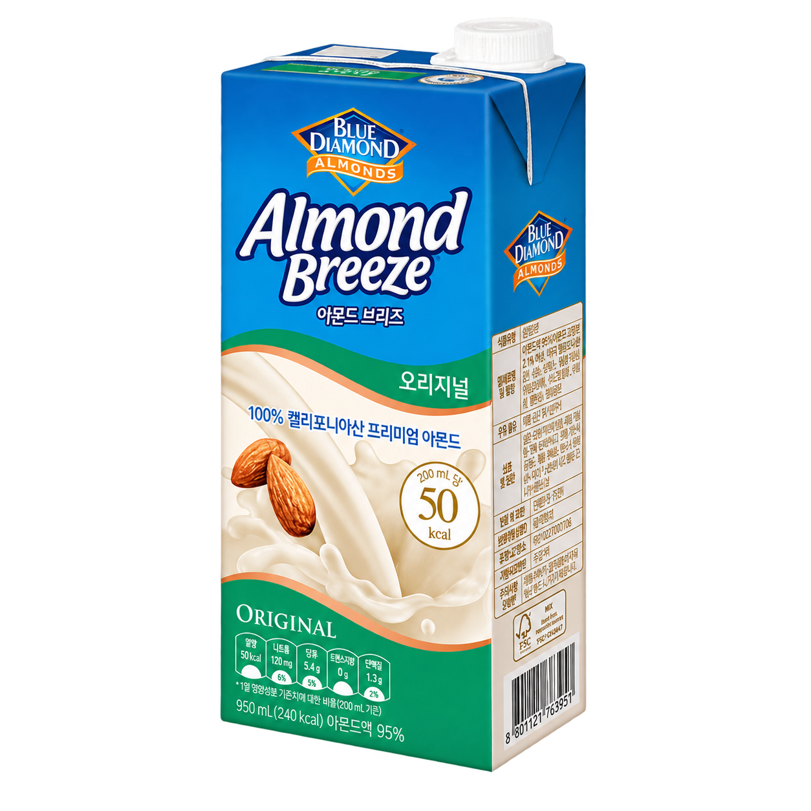
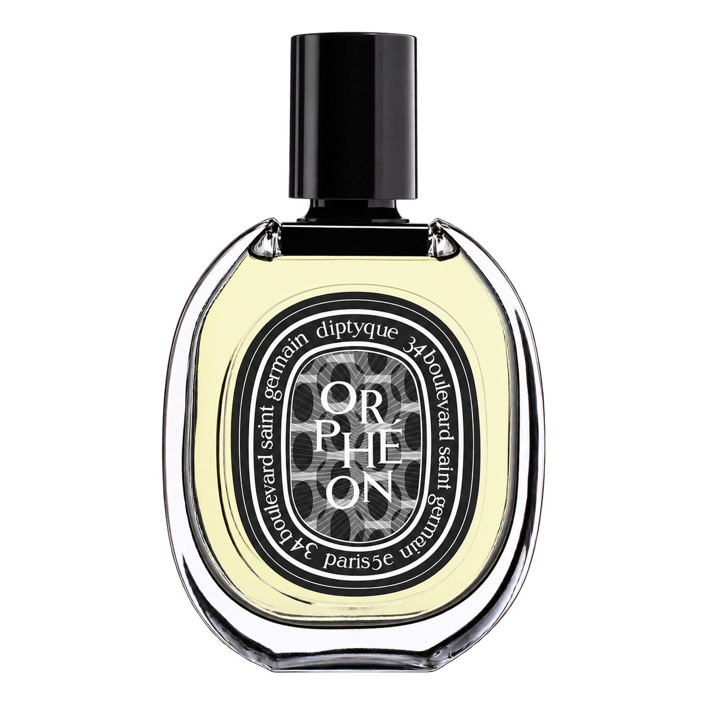
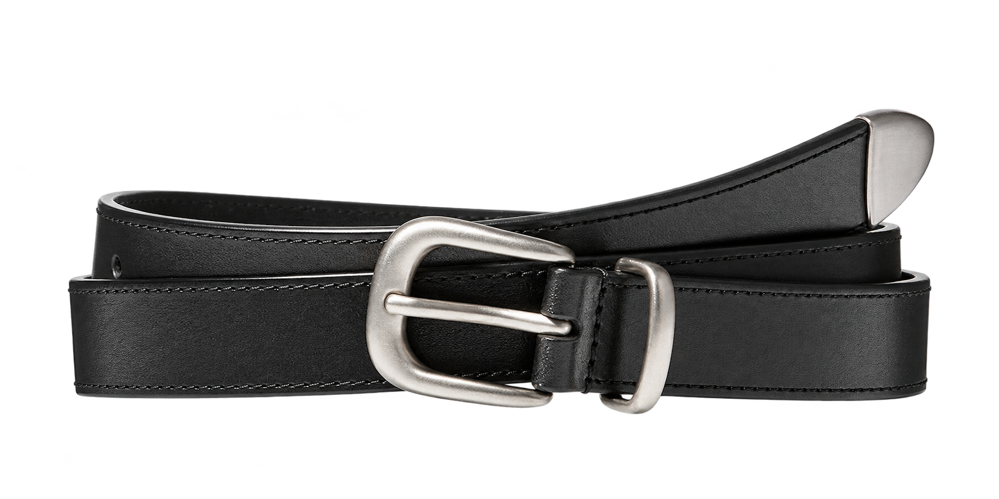
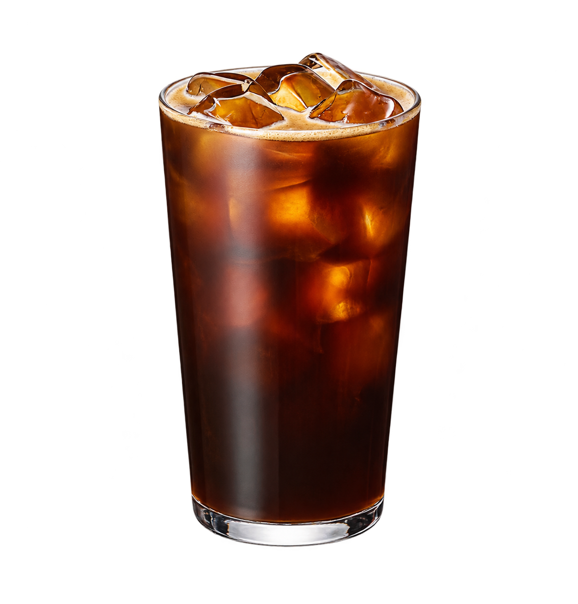

I chose these for the warm colours of sunset that hold my gaze.

I collect photographs for the colours and scenes that stay with me.
I chose these for the warm colours of sunset that hold my gaze.


I chose these because the warmth of clasped hands seems to quietly reach me, too.


I chose these for the contrast between black asphalt and white paint, which suits black-and-white photography.
When I trace the designs I like, I find Dieter Rams’s philosophy.
Dieter Rams’s ten principles of good design continue to inspire generations of designers.

His ten principles of good design made a lasting impression on me. 1. Open up new possibilities. 2. Make a product more useful. 3. Bring beauty and function together. 4. Make a product easy to understand and use. 5. Show restraint and let the user take the lead. 6. Honestly express a product’s performance and value. 7. Pursue lasting value over passing trends. 8. Give careful attention to every detail. 9. Conserve resources and reduce environmental impact. 10. Focus on the essentials and remove what is unnecessary.
The Braun products designed by Dieter Rams embody a philosophy ahead of its time.

I like the Braun products he designed.
Dieter Rams’s minimalism has inspired the designs of companies including Apple and Leica.

I like the designs of the many companies inspired by his approach to minimalism.
Looking at art


When a space feels warm and welcoming. The Impressionist paintings and the interiors that complement them give me a sense of warmth.
Looking at art


When great masterpieces move me. I am captivated by the iconic architecture and the beautiful works on display.
Taking in the village scenery


When I take in the beautiful lake and village. I love the clear water and the warmth of the village.
When I wash up after waking early in the morning.

Washing my hair with a cooling shampoo helps me wake up.
I drink it in place of breakfast.


It is easier on my digestion than regular milk.
I spray it twice on each wrist before leaving home.


I like its lingering powdery scent.
I wear it when I put on trousers.


I like the detail of wearing the long belt with a single twist.
I buy it as soon as I get to school and drink it throughout the morning, until lunch.


I enjoy an Americano because it feels lighter and fresher than a latte or other coffee drinks.